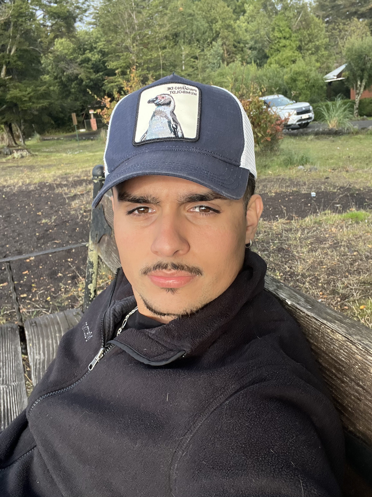

El Guanaco Norte 1751 Casa 2, Huechuraba | +569 9137 7908 | mario.jortiz.n@uc.cl
instagram Soy un joven proactivo y lleno de ganas de insertarse de lleno en el mundo laboral. Aporto mucha energía y dedicación a la organización a la que me uniré, además un aporte positivo al ambiente laboral. Soy un aprendiz rápido y estoy dispuesto a escuchar activamente a mis colegas para poder así lograr un trabajo ideal, acorde a los ideales de la empresa.
A cargo de recibo y armado de pedidos, atención al cliente
Atención de caja y reposición de stock de productos, atención al cliente
Incompleto por razones vocacionales